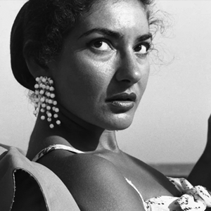
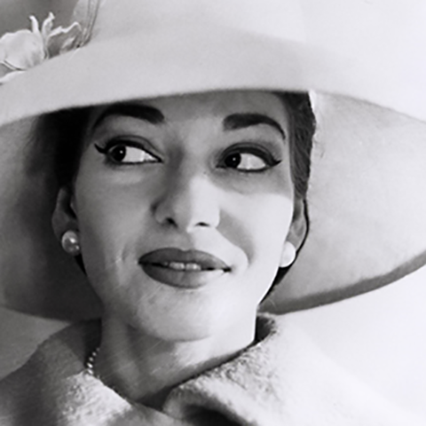
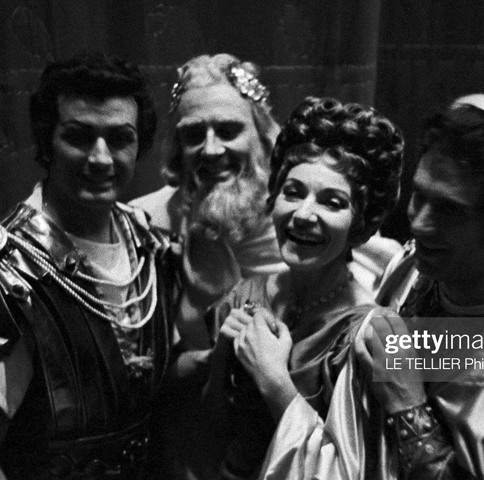
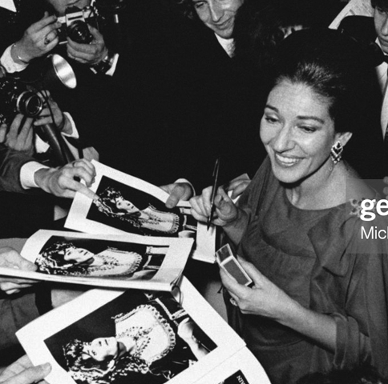

|  |  |
|
|
|---|---|---|---|
|  |  | She matured, Callas began to concentrate on a smaller core repertory, including Cherubini's Medea, Bellini's Norma, Puccini's Tosca, Bellini's La Sonnambula, and Donizetti's Anna Bolena. Most of her other roles were heard only in one series of performances. After 1959, she rarely appeared on the opera stage, but she did sing concerts in America and Europe. Her last opera performances were in June 1965, in Paris as Norma. She came out of retirement in 1973 to tour the world with Giuseppe di Stefano in a series of recitals. Although financially rewarding, the tour did nothing to enhance her reputation. In 1971, she gave a series of masterclasses at the Juilliard School of Music in New York which were quite successful. In 1977, she died of a sudden heart attack in her Paris apartment. | |
 |
 |
Song Highlights
|